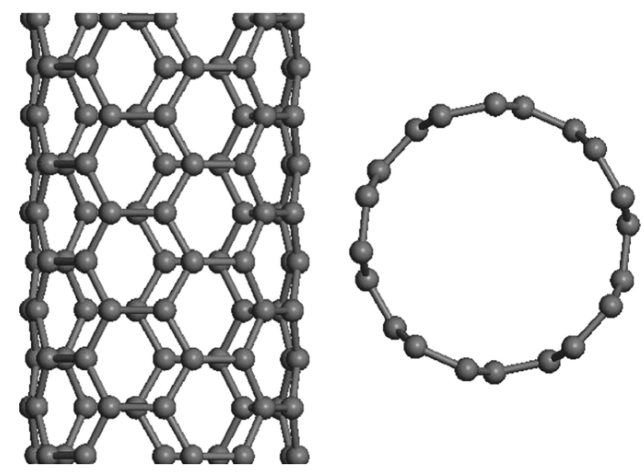

The effect of calibrated nonlocal constant on the modal parameters and stability of axially compressed CNTs
Physica E: Low-dimensional Systems and Nanostructures, 79, pp.139-146, 2016. Journal Article

Abstract
Nowadays investigating the vibration behavior of carbon nanotubes (CNTs) has drawn considerable attention due to the superior mechanical properties of the CNTs. One of the powerful theoretical methods to study the vibration behavior of CNTs is implementing the nonlocal theory. Most of studies on the vibration behavior of CNTs have assumed a fixed value for small scale parameter for all vibration modes, however, this value is mode-dependent. Therefore, in this paper, the small scale parameter is calibrated for a single-walled carbon nanotube (SWCNT) with respect to each vibration mode. For this propose, the governing equation of motion based on the nonlocal beam theory is extracted by applying the Hamilton's principle. Then, by using the power series method, an eigenvalue problem is defined to derive the calibrated value of small scale constant and nonlocal mode shapes of the CNT. By using the expansion theory, the equation of motion is discretized and the effect of nonlocality on the modal parameters and stability of the CNT under compressive force is investigated. Finally, the possibility of estimating nonlocal parameter based on simulated frequency domain response of the system by using modal analysis methods is studied. The results show that the calibration of small scale constant is important and the critical axial force is highly sensitive to this value.